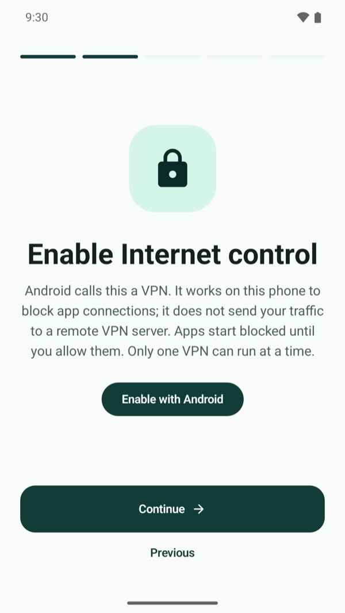
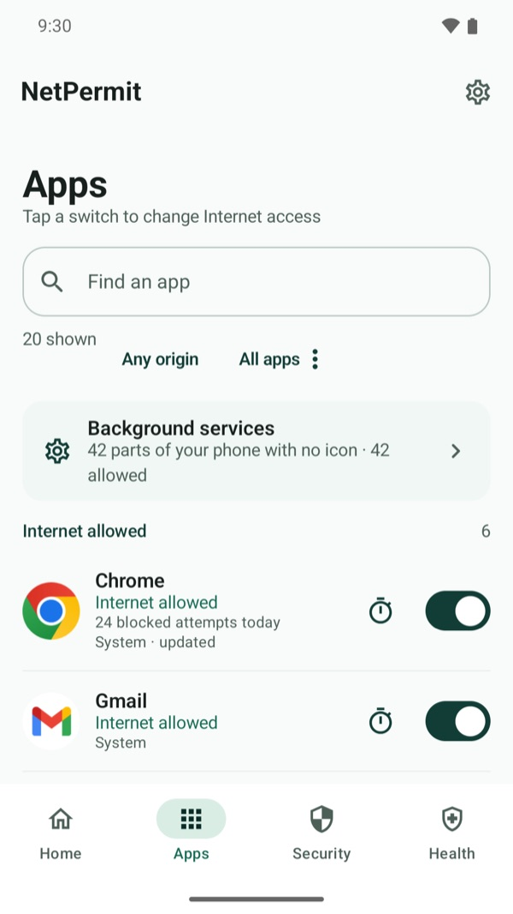
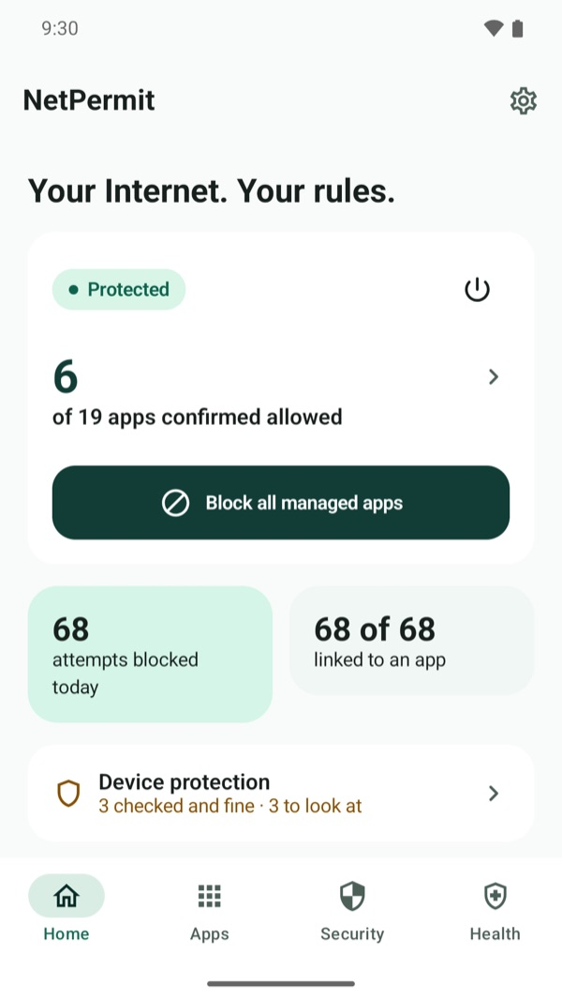
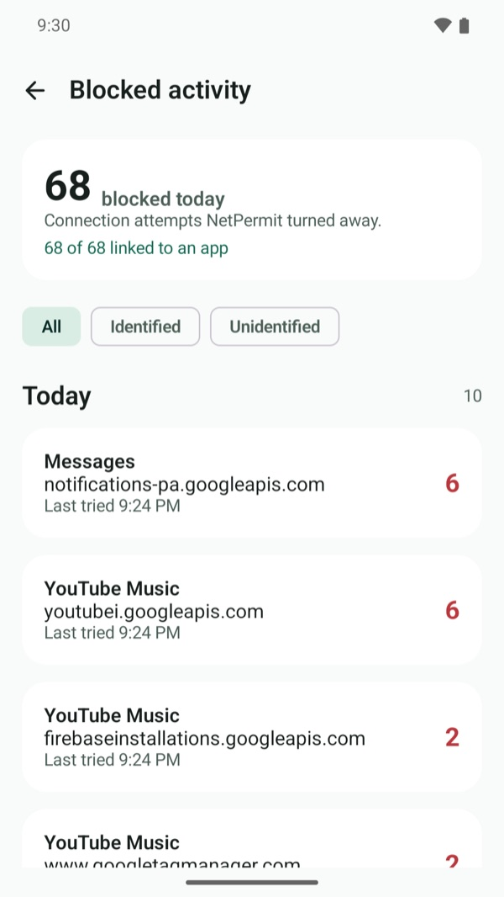
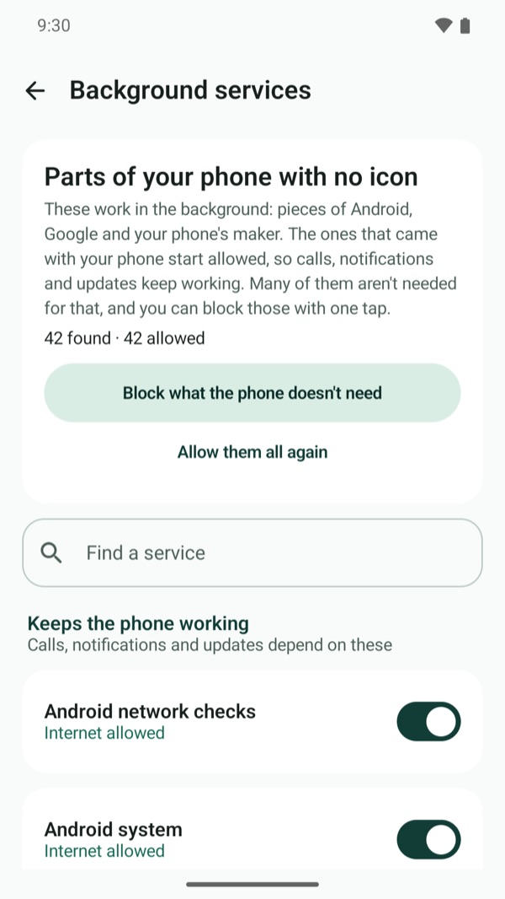

How to use NetPermit
Five minutes from installing it to having every app under your control.
Getting started
-
Turn on Internet control
Open NetPermit. The first screen says what NetPermit reads: the list of apps on your phone, which never leaves it. Tap Agree and continue, then Enable with Android. Android asks whether NetPermit may set up a VPN connection; tap OK. This is how Android lets an app decide which apps get online. Nothing is sent to a remote server.
Android then asks about notifications. Allow them, so NetPermit can tell you when a new app has been blocked.

Android calls it a VPN. It runs on your phone. -
Allow the apps you want
Go to Apps. Every app has a switch. Turn on the ones you want to have Internet access. Everything else stays blocked.
A few things the phone itself relies on start allowed, such as Google Play Store and Settings. You can switch those off too.
The row tells you what is really happening: Internet allowed and Internet blocked appear only once Android has confirmed the change.

One switch per app. -
Check Home
Home shows whether protection is on, how many apps are allowed, and how many connection attempts were blocked today.

Protected, with the count of allowed apps and blocked attempts.
Everyday use
When you install a new app
It starts blocked. NetPermit sends a notification with two buttons, Allow and Keep blocked. You can also change it later in Apps.
Seeing what blocked apps tried to do
On Home, tap attempts blocked today. Blocked activity lists each app with the site it asked for and how many times it tried. This record stays on your phone. It is kept for 1 day on Free, 7 days on Plus and 30 days on Pro. You can empty it there with Clear activity, or switch off Keep blocked activity in Settings.

The parts of your phone with no icon
In Apps, open Background services. These are pieces of Android, Google and your phone's maker that work in the background. The ones that came with your phone start allowed, so calls, notifications and updates keep working.
Many of them aren't needed for that. Tap Block what the phone doesn't need to block those in one go. NetPermit keeps Android itself, calls and messages, Google Play, system updates and public Wi-Fi sign-in. If something you use stops working, switch it back on in the same list, or tap Allow them all again.

Pausing
On Home, tap the power button. You can pause for 15 minutes or 1 hour, and protection turns itself back on. Or choose Pause until I turn it back on. While paused, nothing is blocked, and NetPermit says so.
Blocking everything at once
Tap Block all managed apps on Home, or add the NetPermit tile to Quick Settings. It blocks every app and leaves the parts the phone needs alone.
Plus and Pro
-
Free
The firewall. Free, with no account.
- Block or allow any app, and the parts of your phone that have no icon
- New apps start blocked, and you're told
- See what blocked apps tried to reach, for the last day
- Pause, Block all, and a Quick Settings switch
-
Plus
Timers and a week of history.
- Everything in Free
- Allow an app for 15 minutes, 30 minutes or 1 hour, then it's blocked again
- 7 days of blocked activity
- Any length of temporary access
- Wi-Fi-only apps
- 30 days of blocked activity
- Save blocked activity to a file
-
RECOMMENDED
Pro
Everything NetPermit can do.
- Everything in Plus
- Allow an app for any length of time you choose
- Wi-Fi-only apps: they connect on Wi-Fi and are blocked on mobile data
- 30 days of blocked activity
- Save blocked activity to a file
Prices are shown in the app and on Google Play, in your own currency. Blocking and allowing apps is free and always will be. If a paid plan ends, your rules keep working.
Allowing an app for a while PLUS AND PRO
In Apps, tap the timer icon next to an app and choose 15 minutes, 30 minutes or 1 hour. When the time is up NetPermit blocks the app again by itself. With Pro you can also choose Custom and set any length.
Wi-Fi-only apps PRO
Tap the timer icon next to an app and choose Wi-Fi only. The app connects when you are on Wi-Fi and is blocked on mobile data. The row says Wi-Fi only · connected or Wi-Fi only · waiting for Wi-Fi.
Saving blocked activity PRO
In Blocked activity, tap Save to a file and choose where to put it. The file opens in any spreadsheet app.
Buying, changing or cancelling a plan
Open Settings and more (the gear), then Plans. Purchases go through Google Play. To cancel or change a subscription, use Manage or cancel in Google Play on that page, or open Google Play, tap your profile picture, then Payments and subscriptions. See Terms and payments.
If something isn't working
An app I allowed won't connect
If it was already open, close it and open it again. If every allowed app is offline, open Android's Settings, then Network and Internet, VPN, the gear next to NetPermit, and switch off Block connections without VPN. With that on, Android blocks the apps you allow as well. Always-on VPN can stay on.
Notifications stopped arriving
Most apps get their notifications through Google Play services. In Apps, open Background services and make sure Google Play services is switched on.
NetPermit turned itself off
Android allows one VPN at a time. If another VPN app starts, Android stops NetPermit, and NetPermit sends a notification saying so. Tap it to turn protection back on.
Protection after a restart or an update
NetPermit turns protection back on by itself after the phone restarts. For it to stay on without a gap while the app updates, switch on Always-on VPN for NetPermit in Android's VPN settings, and leave "Block connections without VPN" off.
Still stuck? Contact us.